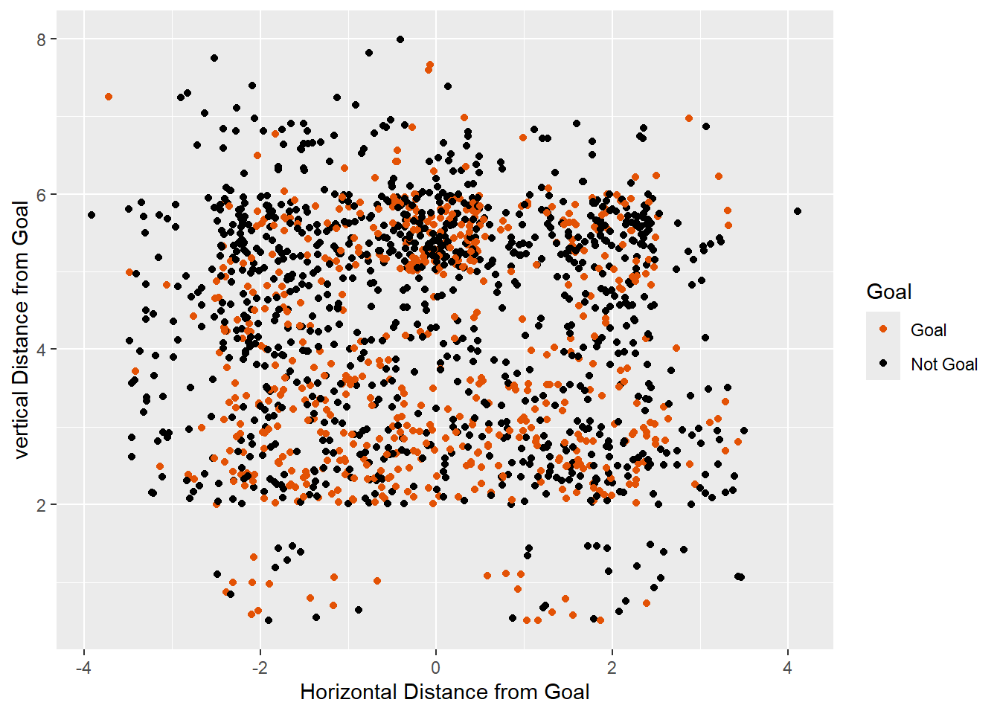
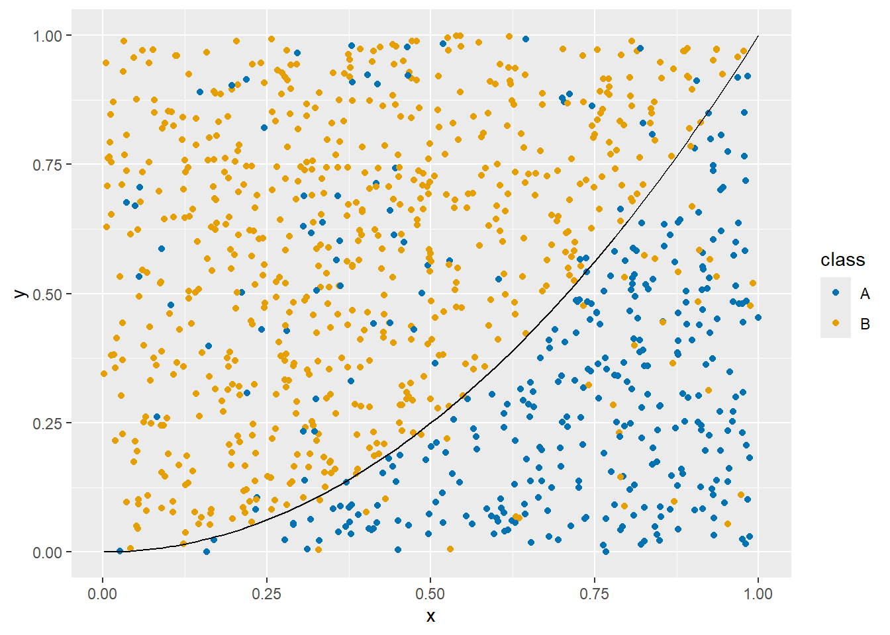
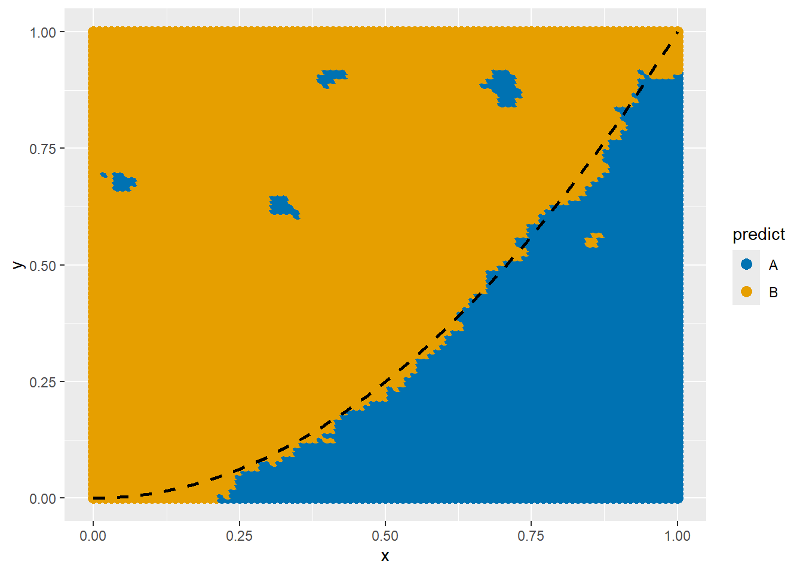
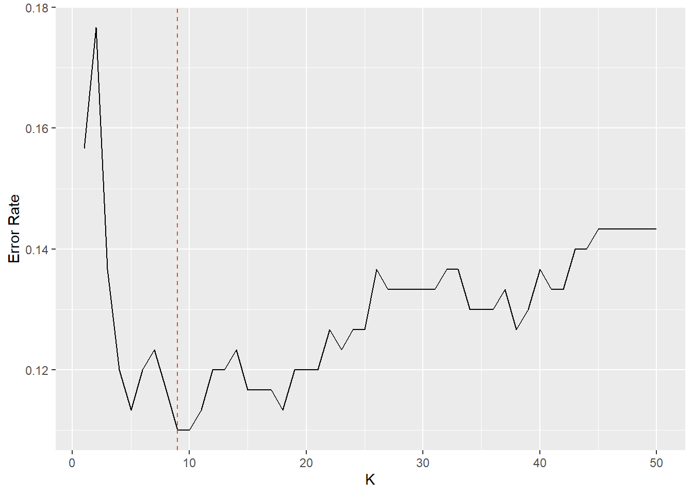

The womenShots.csv dataset contains positional and situational data on a collection of shots taken in several NCAA women’s water polo games from the 2018-2019 seasons.
In this scenario, the variable we would like to predict is the binary variable Goal. Ultimately, we would like to build a model for predicting Goal based on all the other variables but we are going to start with just the variables xj and yj which contain the “jittered” positions of the shots. The coordinates are relative to the center of the goal with the positive y-axis pointing into the pool and the positive x-axis pointed right. Our model will be of the form \[
Y = f(X) + \varepsilon
\] but now \(f\) will be a bit different: it will have to take continuous coordinates as inputs, but output just one of two things: Goal or No Goal. In other words, our final predictive model should look like \[
\hat{Y} = \begin{cases} \text{Goal} & \text{ if X is } G \\
\text{Not Goal} & \text{ if X is in } \bar{G} \end{cases}
\]
where \(G\) is some region of \((x,y)\) space and \(\bar{G}\) is its complement. Such problems are fundamentally different from the regression models in Modules 1-2 and are called classification problems (you can think of Goal and Not Goal as two classes in which we want to split the observations). When the response is binary (like above) the goal is to split the predictor space into two decision regions (\(G\) and \(\bar{G}\)) where we will respectively predict goals and misses.
Before building a formal model, let’s first visualize the data to get a sences of whether classification is even feasible. Plotting shots based on position and coloring the points by whethere or not there was a goal, we can see there will be no perfect way to split the space into decision regions, but there are some clustering of orange and black so maybe we have some hope of beating the “always guess miss model”.
library(tidyverse)
Warning: package 'purrr' was built under R version 4.5.3
── Attaching core tidyverse packages ──────────────────────── tidyverse 2.0.0 ──
✔ dplyr 1.1.4 ✔ readr 2.1.5
✔ forcats 1.0.0 ✔ stringr 1.5.1
✔ ggplot2 3.5.2 ✔ tibble 3.3.0
✔ lubridate 1.9.4 ✔ tidyr 1.3.1
✔ purrr 1.2.2
── Conflicts ────────────────────────────────────────── tidyverse_conflicts() ──
✖ dplyr::filter() masks stats::filter()
✖ dplyr::lag() masks stats::lag()
ℹ Use the conflicted package (<http://conflicted.r-lib.org/>) to force all conflicts to become errors
url="https://raw.githubusercontent.com/jmayberr/math133-stat-learning-fall2026/refs/heads/main/Datasets/womenShots.csv"shots=read.csv(url)shots |>ggplot(aes(x=xj,y=yj,col=Goal))+geom_point()+scale_color_manual(values=c("#e35205","black"))+labs(x="Horizontal Distance from Goal",y='vertical Distance from Goal')

Measuring Accuracy
Before we move on, we should discuss what we mean by “beat the always guess miss model” on two levels:
What do we mean by “beat”?
What is the “always guess miss model”?
To answer the first question, we need to define a metric for assessing how well our model fits the data (akin to RMSE or \(R^2\) for regression problem). The most obvious choice is accuracy, the proportion of correct guesses made by our model: \[
accuracy = \frac{1}{n} \sum_{i=1}^n (\hat{y}_i ==y_i)
\] The model with the highest accuracy wins. Usually, (to keep things consistent with regression where we looked to minimize the MSE) instead of maximizing the accuracy, we will talk in terms of minimizing the error rate \[
ER = 1 - accuracy
\] We’ll discuss some issues with this metric in 3.3 and Module 6, but use it for now.
Second, to explain the “always guess miss model”, note that the majority of shots were misses:
sum(shots$Goal=="Not Goal")/length(shots$Goal)
[1] 0.6309894
Therefore, it is not enough for the error rate of our model to be lower than 50% as one might hope for in coin toss scenarios. We need to beat the model that will always predict \(\hat{Y}\) = Not Goal for any value of \(X\) (called the null classifier). This is kind of like the null model in regression; in absence of a relationship between \(X\) and \(Y\), we might as well guess the most likely value of \(Y\) every time. In the shots dataset, the error rate obtaining by always guessing miss would be
Before we discuss the shots model in detail though, let’s start with a simpler toy example.
Time for more Fake News
We are going to generate fake data in the following way:
We start by choosing independent and randomly generated \(x\) and \(y\) coordinates in the unit cube \(0 \leq x,y \leq 1\)
We assign each observation to a class based on the following rule:
if \(y < x^2\) then there is a 90% chance the point \((x,y)\) will belong to class \(A\) and a 10% chance it will belong to class \(B\)
if \(y \geq x^2\) then there is a 10% chance the point \((x,y)\) will belong to class \(A\) and a 90% chance it will belong to class \(B\)
Here is the code to generate this data:
set.seed(1089)n =1000x =runif(n) #runif generates random uniform numbers between 0 and 1y =runif(n)# Assign class probabilities# P(A) = 0.9 if y < x^2 but 0.1 otherwise. prob_A =ifelse(y < x^2, 0.9, 0.1) class =ifelse(runif(n) < prob_A, "A", "B") df =data.frame(x, y, class)df |>ggplot(aes(x=x,y=y,col=class))+geom_point()+stat_function(fun=function(x) x^2,colour="black")+scale_color_manual(values=c("#0072B2","#E69F00"))

Clearly, if I want to GUESS the class \(A\) or \(B\) of a new data point, then I would guess class A if \(y < x^2\) and guess \(B\) otherwise. This type of prediction rule is called a Bayes Classifier1. The error rate in our example should be about 10%. Let’s check it for our data:
and we have to guess how to divide our space in the best way possible to minimize the error rate of our predictions. That’s where our first realistic classification algorithm comes in: when in doubt, cheat off your neighbors.
K-Nearest Neighbors
The K-Nearest Neighbors (KNN) algorithm predicts the class of a new observation by looking at the classes of it K-nearest neighbors in the training data and deciding its own class based on majority vote (i.e. adopting the most commonly occurring class among its neighbors). The hyper-parameter2\(K\) can be any whole number from 1 up to the whole sample size and “nearest” is defined in terms of (Euclidean) distance.
To illustrate the use of KNN, let’s split our fake data into training and testing sets using a 70/30 split. The KNN function will then apply KNN to predict the class of the testing set observations based on their nearest neighbors in the training set data. We’ll start with K=5 neighbors.
The head function shows the first six predictions of fake_knn. To compute the error rate,
sum(fake_knn!=test$class)/length(test$class)
[1] 0.1133333
Pretty close to the true expected error rate of 0.13! Here is a more detailed plot of what we would predict if we use our original dataframe as the training set, but include a finer grid of points for the test set (this is called a plot of the decision region):
x =seq(0,1,by=0.01) y =seq(0,1,by=0.01) new_df =expand.grid(x=x, y=y) new_df$predict=knn(df[,c("x","y")], new_df[,c("x","y")],cl=df$class,k=5) new_df |>ggplot(aes(x=x,y=y,col=predict))+geom_point(size=3)+scale_color_manual(values=c("#0072B2","#E69F00"))+stat_function(fun=function(x) x^2, color="black", linewidth=1, linetype="dashed")

Notice that it almost picks up the splitting parabola but also leaves some islands of As and Bs to fend for themselves.
Why does K matter?
Suppose we compute the test error rate for the previous example in three different cases:
K=1
K=5
K=350
In other words, the first case will predict the class based on looking at just one neighbor, the second will look at 5, and the last will look at half the data. We already fit the first, so lets do the other two.
Notice that the error rates are higher for K=1 and K=350. This sort of “U” shaped dependence of model accuracy on the choice of K is very common.
When K is really small, the model doesn’t use enough information
When K is really large, the model uses too much information
Maybe that’s all you need to know, but there is a lot more going on here in terms of the relationship between “model flexibility” and the “bias-variance trade-off”. This is the same bias-variance tradeoff we first encountered with histogram biwidths in Module 1! Since this will appear as a common theme throughout the course, we’ll spend a little extra time to break it down here.
When K=1, the decision rule is extremely “flexible”: it tries very hard to contort itself to the training set at the expense of exploiting any patterns in generalizing A and B occurrence rates to larger regions. For example, let’s say I regenerate a new training set of size 1000 and look at the decision regions for the fake data with both K=1 models:
They are both really holey, holey, holey4 and prediction regions are all over the place. In this case, we say that the classification scheme has “high variance” since the decision regions vary widely between different data sets. In contrast, for K=350, the regions are almost identical:
But now we have another problem: the prediction regions for the two classes look nothing like they should! That’s because when K is large, the model becomes more “biased” by trying to fit everything into neat boxes (go with this half or that half). The model is too inflexible to changes in the data. To summarize,
When K is too small, KNN is too flexible with high variance
When K is too large, KNN is too inflexible with high bias
Typically, more complicated decision regions (like what we see when K=1) have low bias, high variance while overly simple decision regions (like K=350) have high bias, low variance. As a general rule
Increased flexibility leads to higher variance and lower bias.
Ideally, we would like to control both bias and variance, but it usually isn’t possible. Instead, we have to find a sweet spot in the middle that balances the two errors.
Now how do you find the optimal K in between? Honestly, it’s usually trial and error (hopefully with some smart programming like a for loop to run through different values) although some suggest the heuristic \[
K \approx \sqrt{n}
\] We’ll talk more about R functions for exploring optimal \(K\) in Module 4 when we discuss cross-validation, but until then, here is a brute force approach to optimal K in this problem, using the original training testing set
maxK=50fits=data.frame(K=1:maxK,er=NA)for (i in1:maxK){pred=knn(train[,c("x","y")],test[,c("x","y")],cl=train$class,k=fits$K[i]) fits$er[i]=sum(pred!=test$class)/length(test$class) }fits |>ggplot(aes(x=K,y=er))+geom_line()+ylab("Error Rate")+geom_vline(xintercept=fits$K[which.min(fits$er)], color="#e35205", linetype="dashed")

It looks like
fits$K[which.min(fits$er)]
[1] 9
was the optimal value here. Different seeds might change the optimal \(K\), values in the 7-25 range typically do OK5. Note that for this dataset, \(n=1000\) so \(\sqrt{n} \approx 32\) is outside this range.
Next Up
\(K\)-Nearest Neighbors generates some pretty pictures and it’s a powerful idea, but it can be difficult to use it to gain insights into how your predictors are actually impacting your outcome. For comparison, in a linear model, the slopes \(\beta_k\) tell you how the outcome responds to changes in the predictor. There are no direct analogs here because there aren’t really any parameters estimated in KNN which is why it is referred to as a nonparametric model. Next time we’ll discuss logistic regression which models the odds of “success” in binary models as a function of the predictors.
Practice
Fit a KNN model to the Goal variable from the water polo shots database using the xj and yj variables as predictors. Use a 70/30 training/testing split and K=10. Calculate the test error rate of your model. Does you model beat the null classifier benchmark of approximately 0.37?
As time permits, consider refining your solution in one of the following ways:
Plot the decision regions
Find an optimal value of K
Average the test error rates over multiple different splits.
The third extension previews an idea we’ll formalize in Module 4: a single train/test split can be misleading!
Footnotes
In general, a Bayes classifier is one which picks the class that is most likely for the given region. The name is indeed related to Bayes rule from probability although in this example, we don’t need it because we are given \(P(A|(x,y) \in R)=0.9\) and \(P(B|(x,y) \in R)=0.1\) where \(R\) is the region where \(y < x^2\) and the reverse values for \(\bar{R}\) so we know which class is most likely for \(R\) and \(\bar{R}\). However, in many real world examples, like spam detection, Bayes’ formula is instead used to estimate these conditional probabilities↩︎
Hyperparameters, as opposed to parameters, are values set before the training process begins. They are used to control the learning process itself, but they are not learned from the data and don’t have any real world meaning for the variables in your dataset.↩︎
Note: you may get a different error rate if your seed is different.↩︎